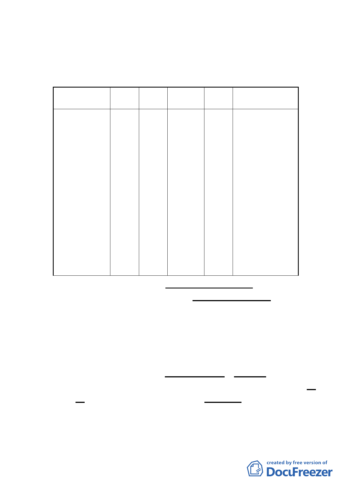

入皆須通過本基地，不利單獨使用，基於整體規劃考量，主
要計畫將該山丘地一併變更為大專用地，惟兼顧公共安全及
水土保持，該山丘地仍維持原有自然地貌，不進行開發使用，
並加強與校區景觀整體規劃。
位置
使用分
區
面積
(公頃)
建蔽率
容積率
使用性質及管制內
容
萬壽路以南，
土地及建築物允
指南路2段以
許使用項目及其
北，I-2 號道
大專
路以東，政治 用 地
( 國 立 8.61
大學國際關係 政 治
大學)
研究中心以西
40%
他管制，依臺北
240%
市土地使用分區
管 制 規 則 第 83
條 及 第 84 條 高
的大專用地範
度比之規定辦
圍 理。
（三） 擬具交通系統計畫，詳原公展細計P11-P13。
（四） 擬定都市設計管制要點：（原公展細計P20-P23）
為塑造本計畫區獨特之意象、景觀及環境品質，對於區內
開放空間、建築物配置、高度、造型等事項特予訂定都市
設計管制要點實施管理，作為本計畫區未來都市設計審議
之依據，且應先經「臺北市都市設計及土地使用開發許可
審議委員會」審議通過後，始得核發建築執照。
（五） 事業及財務計畫：（原公展主計P26、細計P16）
1. 土地取得：本計畫區範圍內之公有土地，由政治大學以「撥
用」方式取得，其餘私有土地以徵購方式取得。
2. 開發方式：本計畫區由國立政治大學擔任開發主辦機關，主
導開發業務、負責用地取得，並執行公共工程之規劃設計與
施工。
-4-